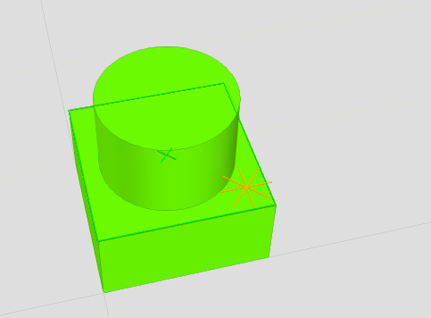
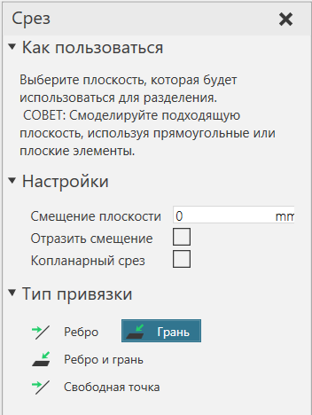

Срезать геометрию |
|
Геометрию элемента можно разрезать и разделить на новые элементы геометрии. 1.Выберите одну или несколько элементов в компоненте. 2.На вкладке Моделирование в группе Геометрия, щелкните стрелку Инструменты, а потом под Инструменты элементов, нажмите Срез. 3.На панели задач Срез определите Тип привязки. Это определяет тип местоположения, которое вы можете выбрать в трехмерном мире для определения секущей плоскости. 4.В трехмерном мире выберите место для определения секущей плоскости.  5.Если секущая плоскость не подходит, в панели задач Срез, выполните одно или несколько из следующих действий: ·Определите Смещение плоскости которое сместит плоскость по оси Z. ·Отразите или инвертируйте плоскость, установив флажок Отразить смещение . ·Нацельтесь на ребра в одной плоскости, установив флажок Копланарный Срез. ·Настройте Тип привязки, а затем повторно выберите место для определения секущей плоскости.  6.Если секущая плоскость и маркеры срезов в 3D-мире приемлемы, в панели задач Срез, нажмите Срез. Примечание: Если геометрия вырезается из элемента примитивного типа, этот элемент будет свернут, чтобы сформировать элемент геометрии. |